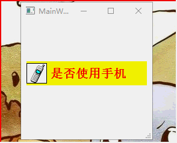
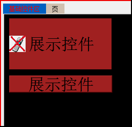
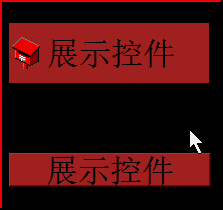

QCheckBox复选框子控件的设置
QCheckBox {
color : red;
font-size : 20px;
font : bold;
background : yellow;
min-width : 200px;
min-height : 40px;
}
QCheckBox::indicator{
width : 32px;
height : 32px;
border-width : 1px;
border-style : solid;
border-color:black;
background-color : #FFFFFF;
image : url(./NETW0006); /*直接贴图而不是设置属性了*/
}
QCheckBox::indicator:checked{
image : url(./NETW0005);
}

QCheckBox触发区域的疑惑???
开始以为QCheckBox的触发区域和QPushButton的一样,但在最近的工作发现并非如此。
问题描述 : 界面上需要为QCheckBox设置一种样式,在鼠标悬浮到控件上时,控件的背景色会变化,当然控件的长宽是一个固定值。
当时想着就是先设置QCheckBox控件的大小,然后加一个hover就OK了。下图中,上为勾选框下为按钮,鼠标悬于按钮任意位置即可变色,但是勾选框不行,只能在悬浮与文字和复选框部分时变色,这样不符合要求。我在尝试修改QCheckBox的content、padding、margin,但都失败了。

目前的解决方法 : 在修改中发现增高复选框的高度可以纵向的增加触发区域(或者设置margin 和 padding)。在设置文本时,在文本后面加空格可以横向的增加触发区域,结果如下图
#show_1 /*QCheckBox控件名称*/
{
/*要求的QCheckBox高度、宽度和字体*/
min-height : 60px; /*注意注意 : 这里的高度或宽度不能写死,否则不会变化*/
min-width : 200px;
font:32px;
background-color : brown;
}
#show_1::indicator
{
height : 60px; /*增高复选框区域的高度 或者设置margin*/
width : 32px;
}
#show_1::indicator:checked
{
image : url(./NETW0005); /*复选框图片为32*32 注意这里加载图片的方法*/
}
额外补充1: 复选框的margin可以调节,如下代码
#show_1::indicator
{
height : 60px; /*这里宽高就这样设置 不要设置min 和 max*/
width : 32px;
padding-left : 10px;
margin-right : 50px;
}
额外补充2:QCheckBox的宽度 = 复选框宽度+文本部分宽度
注意注意 : QCheckBox本身的高度或宽度不能写死,否则不会变化
